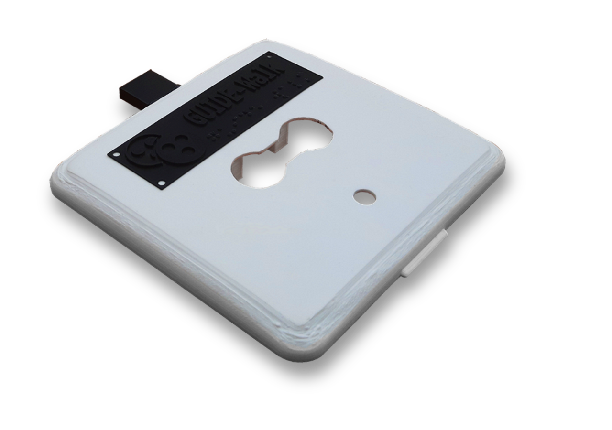
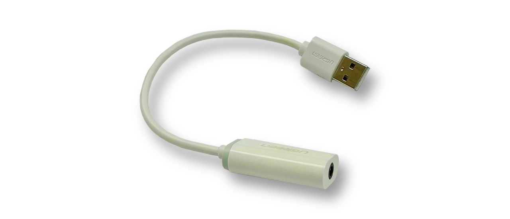
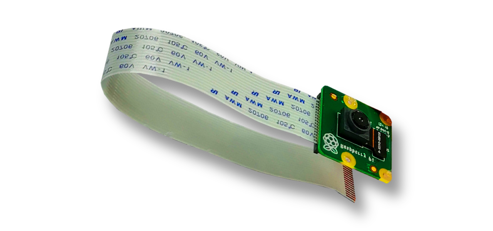
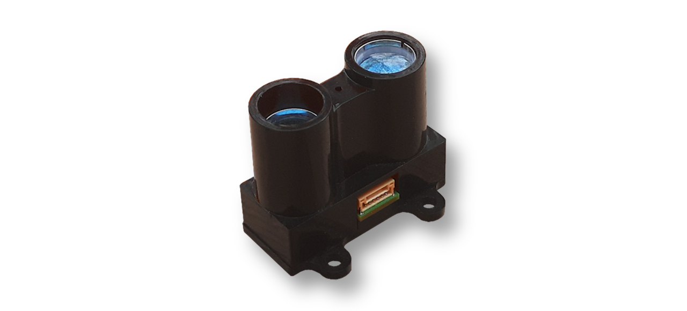
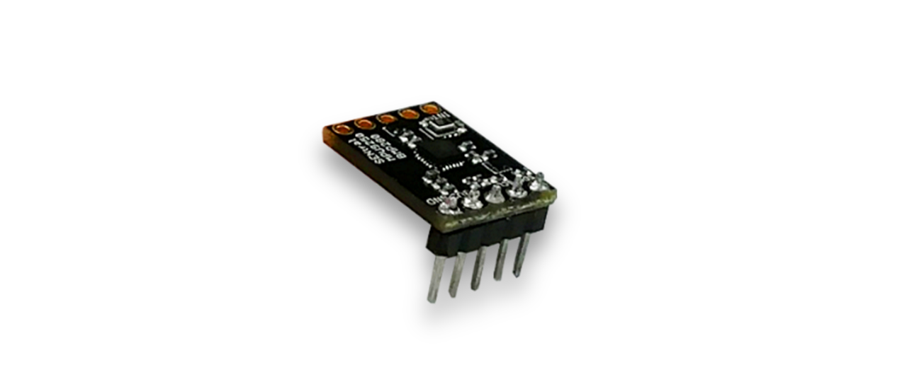
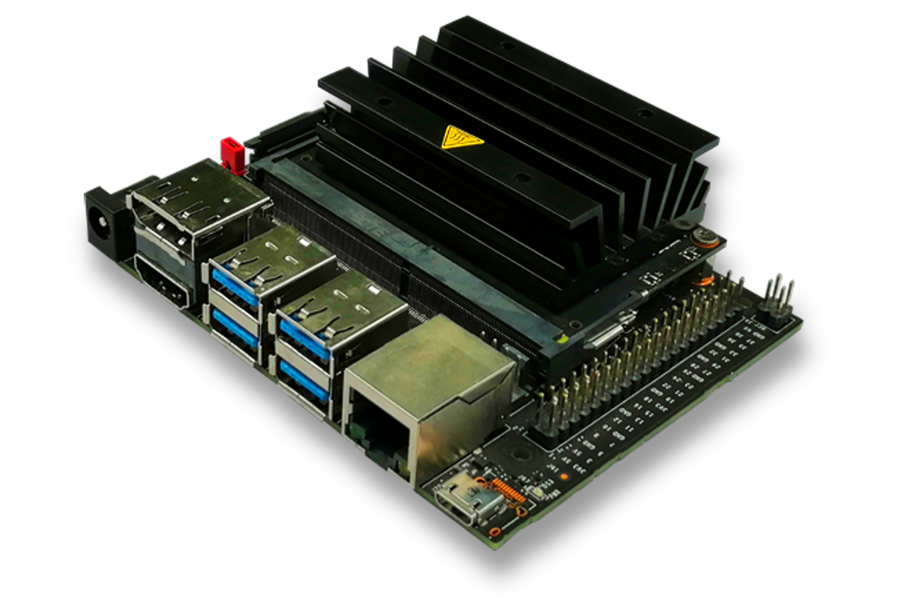

Aufbau
Damit es für den alltäglichen Gebrauch geeignet ist und um ein portables Design zu ermöglichen, kommt der GUIDE-Walk mit möglichst wenigen und kompakten Komponenten aus, die im Verhältnis zu seiner Größe am effizientesten sind. Folgende Bestandteile sind in der Hülle untergebracht:
(Mit der Maus über die Komponenten fahren, um Details zu lesen)
Alle Warnungen und Hinweise werden mit einer Sprachausgabe an den Träger weitergeleitet. Diese speziellen Bone-Conduction-Kopfhörer liegen auf dem Gehörknochen auf und beeinträchtigen somit das Hörvermögen des blinden Trägers nicht.
Die Abdeckung der Hauptbox ist mit Magneten an der Unterseite fixiert und somit jederzeit einfach abnehmbar. Sie besitzt Aussparungen für die Kamera, den LiDAR und den Bewegungssensor.
Da der Jetson Nano keine Kopfhörerbuchse besitzt, müssen die Sounds erst durch diese externe Soundkarte abgegeben werden, um schließlich bei den Kopfhörern anzukommen.
Für die Aufnahme der Bilder ist das Kameramodul zuständig, welches fortlaufend mit 30 Bildern pro Sekunde operiert und die Inputs für die KI stellt. Es erreicht dabei einen konstanten Stream mit einer Auflösung von 720p (1280x720px).
Parallel zur KI-Erkennung misst der LiDAR-Sensor mit Laserstrahlen universell die Entfernung zu potentiellen Hindernissen vor dem Träger und signalisiert ihm durch Pieptöne, wenn er etwas zu nahe kommt (ähnlich wie der Parkassistent im Auto).
Dieser Bewegungssensor, welcher Beschleunigung, Winkel- änderung, Magnetfeldstärke sowie Außentemperatur und Luftdruck messen kann, zeichnet das Bewegungsprofil des Trägers auf und leitet es an den Computer weiter. Dies hilft, die Genauigkeit der KI zu optimieren.
Das Herzstück des Geräts der Jetson Nano von Nvidia, ein leistungsstarker, Linux-basierter Single-Board-Computer, welches speziell für KI-Anwendungen konzipiert wurde. Zu seinen Vorteilen gehören Hardware-beschleunigte KI und integrierte Software und Frameworks für KI-Applikationen. Auf diesem Hauptcomputer läuft das Programm, der die Bilder auswertet und die Sensoren bedient.

Das Gehäuse bietet den elektrischen Komponenten eine sichere Hülle vor Belastung und Wetter. Auch macht es das Gerät überhaupt tragfähig. Diese finale Iteration wurde mit dem 3D-Drucker gedruckt und ist mit tastbaren Hinweisen wie Rillen und Blindenschrift sowie einem praktischen Magnetverschluss versehen. Die Hauptbox misst 12,9x12x6,4cm bei einem Gewicht von ca. 250g.
Akkupack:
Die Stromversorgung des Geräts wird durch dieses separate Akkupack gewährleistet, welches einfach zu bedienen ist und in eine Tasche gelegt bzw. auf den Gürtel geschnallt werden kann. So hat der blinde Träger beide Hände frei, um auch die Hilfsmittel zu verwenden, mit denen er bereits vertraut ist. Der Akku hat eine Kapazität von 8300 mAh und wiegt ca. 655g.